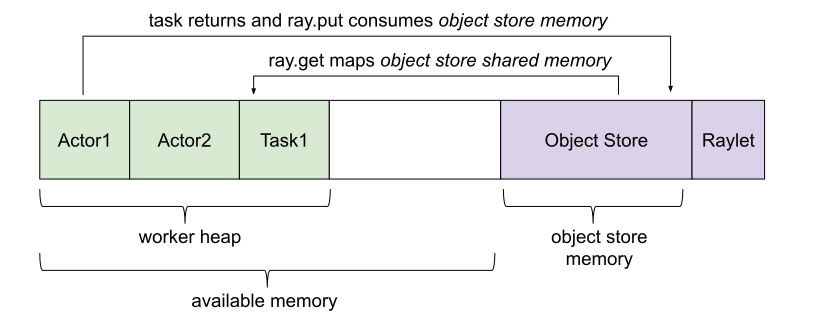

内存管理
Contents
内存管理#
本页介绍了 Ray 中的内存管理工作原理。
另请参阅 OOM 调试 以了解如何排除内存不足问题。
概念#
Ray 应用程序使用内存的几种方式：
- Ray 系统内存：Ray 内部使用的内存
GCS：内存用于存储集群中存在的节点和 actor 的列表。通常，用于这些目的的内存量非常小。
Raylet：内存用于在每个节点上运行的 C++ raylet 进程。这不能被控制，但通常非常小。
- 应用内存：这是应用程序使用的内存
工作堆：内存用于你的应用（如，Python 代码或 TensorFlow），最好通过
top等命令中的应用程序的 驻留集大小 (RSS) 减去其 共享内存使用 (SHR) 来测量。你需要减去 SHR 的原因是，对象存储共享内存由操作系统报告为与每个 worker 共享。不减去 SHR 会导致内存使用量重复计数。对象存储内存：当你的程序通过
ray.put创建对象并通过远程函数返回值时使用的内存。对象是引用计数的，当它们超出范围时会被驱逐。每个节点上都运行一个对象存储服务器。默认情况下，Ray 在启动实例时会保留可用内存的 30%。对象存储的大小可以通过 –object-store-memory 控制。默认情况下，内存分配给 Linux 的 ``/dev/shm``（共享内存）。对于 MacOS，Ray 使用 ``/tmp``（磁盘），这可能会影响性能。在 Ray 1.3+ 中，如果对象存储填满，对象会被 溢出到磁盘。对象存储共享内存：当你的程序通过
ray.get读取对象时使用的内存。请注意，如果对象已经存在于节点上，则不会导致额外的分配。这允许大对象在许多 actor 和任务之间高效共享。
ObjectRef 对象引用#
Ray 实现了分布式引用计数，以便集群中的任何 ObjectRef 都会在对象存储中固定。这包括本地 Python 引用、待处理任务的参数以及序列化在其他对象中的 ID。
使用 ‘ray memory’ 进行调试#
ray memory 命令可以帮助跟踪哪些 ObjectRef 引用在范围内，可能导致的 ObjectStoreFullError。
在 Ray 应用程序运行时从命令行运行 ray memory 将为你提供当前由驱动程序、actor 和集群中的任务持有的所有 ObjectRef 引用的转储。
======== Object references status: 2021-02-23 22:02:22.072221 ========
Grouping by node address... Sorting by object size...
--- Summary for node address: 192.168.0.15 ---
Mem Used by Objects Local References Pinned Count Pending Tasks Captured in Objects Actor Handles
287 MiB 4 0 0 1 0
--- Object references for node address: 192.168.0.15 ---
IP Address PID Type Object Ref Size Reference Type Call Site
192.168.0.15 6465 Driver ffffffffffffffffffffffffffffffffffffffff0100000001000000 15 MiB LOCAL_REFERENCE (put object)
| test.py:
<module>:17
192.168.0.15 6465 Driver a67dc375e60ddd1affffffffffffffffffffffff0100000001000000 15 MiB LOCAL_REFERENCE (task call)
| test.py:
:<module>:18
192.168.0.15 6465 Driver ffffffffffffffffffffffffffffffffffffffff0100000002000000 18 MiB CAPTURED_IN_OBJECT (put object) |
test.py:
<module>:19
192.168.0.15 6465 Driver ffffffffffffffffffffffffffffffffffffffff0100000004000000 21 MiB LOCAL_REFERENCE (put object) |
test.py:
<module>:20
192.168.0.15 6465 Driver ffffffffffffffffffffffffffffffffffffffff0100000003000000 218 MiB LOCAL_REFERENCE (put object) |
test.py:
<module>:20
--- Aggregate object store stats across all nodes ---
Plasma memory usage 0 MiB, 4 objects, 0.0% full
输出中的每个条目都对应于当前在对象存储中固定对象的 ObjectRef，以及引用所在的位置（在驱动程序中、在 worker 中等），引用的类型（有关引用类型的详细信息，请参见下文），对象的大小（以字节为单位），创建对象的进程 ID 和 IP 地址，以及引用在应用程序中创建的位置。
ray memory 附带一些功能，使内存调试体验更加有效。例如，你可以添加参数 sort-by=OBJECT_SIZE 和 group-by=STACK_TRACE，这对于跟踪内存泄漏发生的代码行可能特别有帮助。你可以通过运行 ray memory --help 查看完整的选项套件。
有五种引用类型可以保持对象固定：
1. 本地 ObjectRef 引用
import ray
@ray.remote
def f(arg):
return arg
a = ray.put(None)
b = f.remote(None)
在这个例子中，我们创建了两个对象的引用：一个是 ray.put() 在对象存储中的对象，另一个是 f.remote() 的返回值。
--- Summary for node address: 192.168.0.15 ---
Mem Used by Objects Local References Pinned Count Pending Tasks Captured in Objects Actor Handles
30 MiB 2 0 0 0 0
--- Object references for node address: 192.168.0.15 ---
IP Address PID Type Object Ref Size Reference Type Call Site
192.168.0.15 6867 Driver ffffffffffffffffffffffffffffffffffffffff0100000001000000 15 MiB LOCAL_REFERENCE (put object) |
test.py:
<module>:12
192.168.0.15 6867 Driver a67dc375e60ddd1affffffffffffffffffffffff0100000001000000 15 MiB LOCAL_REFERENCE (task call)
| test.py:
:<module>:13
在 ray memory 的输出中，我们可以看到这两个引用都在驱动程序进程中标记为 LOCAL_REFERENCE，但是“引用创建位置”中的注释表明第一个是从“put object”创建的，第二个是从“task call”创建的。
2. 内存中固定的对象
import numpy as np
a = ray.put(np.zeros(1))
b = ray.get(a)
del a
此例中，我们创建了一个 numpy 数组，然后将其存储在对象存储中。然后，我们从对象存储中获取相同的 numpy 数组并删除其 ObjectRef。在这种情况下，对象仍然固定在对象存储中，因为反序列化的副本（存储在 b 中）直接指向对象存储中的内存。
--- Summary for node address: 192.168.0.15 ---
Mem Used by Objects Local References Pinned Count Pending Tasks Captured in Objects Actor Handles
243 MiB 0 1 0 0 0
--- Object references for node address: 192.168.0.15 ---
IP Address PID Type Object Ref Size Reference Type Call Site
192.168.0.15 7066 Driver ffffffffffffffffffffffffffffffffffffffff0100000001000000 243 MiB PINNED_IN_MEMORY test.
py:<module>:19
ray memory 的输出显示这个对象是 PINNED_IN_MEMORY。如果我们 del b，引用就可以被释放。
3. 待处理任务引用
@ray.remote
def f(arg):
while True:
pass
a = ray.put(None)
b = f.remote(a)
本例中，我们首先通过 ray.put() 创建一个对象，然后提交一个依赖于该对象的任务。
--- Summary for node address: 192.168.0.15 ---
Mem Used by Objects Local References Pinned Count Pending Tasks Captured in Objects Actor Handles
25 MiB 1 1 1 0 0
--- Object references for node address: 192.168.0.15 ---
IP Address PID Type Object Ref Size Reference Type Call Site
192.168.0.15 7207 Driver a67dc375e60ddd1affffffffffffffffffffffff0100000001000000 ? LOCAL_REFERENCE (task call)
| test.py:
:<module>:29
192.168.0.15 7241 Worker ffffffffffffffffffffffffffffffffffffffff0100000001000000 10 MiB PINNED_IN_MEMORY (deserialize task arg)
__main__.f
192.168.0.15 7207 Driver ffffffffffffffffffffffffffffffffffffffff0100000001000000 15 MiB USED_BY_PENDING_TASK (put object) |
test.py:
<module>:28
在任务运行时，我们看到 ray memory 显示驱动程序进程中的对象既有 LOCAL_REFERENCE 又有 USED_BY_PENDING_TASK 引用。工作进程也持有对象的引用，因为 Python arg 直接引用 plasma 中的内存，所以它不能被驱逐；因此它是 PINNED_IN_MEMORY。
4. 序列化的 ObjectRef 引用
@ray.remote
def f(arg):
while True:
pass
a = ray.put(None)
b = f.remote([a])
例子中，我们再次通过 ray.put() 创建一个对象，然后将其传递给另一个对象包装的任务（在本例中是一个列表）。
--- Summary for node address: 192.168.0.15 ---
Mem Used by Objects Local References Pinned Count Pending Tasks Captured in Objects Actor Handles
15 MiB 2 0 1 0 0
--- Object references for node address: 192.168.0.15 ---
IP Address PID Type Object Ref Size Reference Type Call Site
192.168.0.15 7411 Worker ffffffffffffffffffffffffffffffffffffffff0100000001000000 ? LOCAL_REFERENCE (deserialize task arg)
__main__.f
192.168.0.15 7373 Driver a67dc375e60ddd1affffffffffffffffffffffff0100000001000000 ? LOCAL_REFERENCE (task call)
| test.py:
:<module>:38
192.168.0.15 7373 Driver ffffffffffffffffffffffffffffffffffffffff0100000001000000 15 MiB USED_BY_PENDING_TASK (put object)
| test.py:
<module>:37
现在，驱动程序和运行任务的工作进程都持有对象的 LOCAL_REFERENCE，除了驱动程序上的 USED_BY_PENDING_TASK。如果这是一个 actor 任务，actor 可以在任务完成后通过将 ObjectRef 存储在成员变量中持有 LOCAL_REFERENCE。
5. 捕获 ObjectRef 引用
a = ray.put(None)
b = ray.put([a])
del a
本例中，我们首先通过 ray.put() 创建一个对象，然后在另一个 ray.put() 对象中捕获其 ObjectRef，然后删除第一个 ObjectRef。在这种情况下，这两个对象仍然固定。
--- Summary for node address: 192.168.0.15 ---
Mem Used by Objects Local References Pinned Count Pending Tasks Captured in Objects Actor Handles
233 MiB 1 0 0 1 0
--- Object references for node address: 192.168.0.15 ---
IP Address PID Type Object Ref Size Reference Type Call Site
192.168.0.15 7473 Driver ffffffffffffffffffffffffffffffffffffffff0100000001000000 15 MiB CAPTURED_IN_OBJECT (put object) |
test.py:
<module>:41
192.168.0.15 7473 Driver ffffffffffffffffffffffffffffffffffffffff0100000002000000 218 MiB LOCAL_REFERENCE (put object) |
test.py:
<module>:42
ray memory 输出中，我们可以看到第二个对象显示为普通的 LOCAL_REFERENCE，但第一个对象被列为 CAPTURED_IN_OBJECT。
内存感知调度#
默认，Ray 在调度时不考虑任务或 actor 的潜在内存使用情况。这只是因为它无法提前估计需要多少内存。但是，如果你知道一个任务或 actor 需要多少内存，你可以在其 ray.remote 装饰器的资源需求中指定它，以启用内存感知调度：
Important
指定内存要求不会对内存使用施加任何限制。这些要求仅用于调度期间的准入控制（类似于 Ray 中的 CPU 调度工作原理）。任务本身不应使用超过请求的内存。
要告诉 Ray 调度程序一个任务或 actor 需要一定数量的可用内存来运行，请设置 memory 参数。Ray 调度程序将在调度期间保留指定数量的可用内存，类似于它处理 CPU 和 GPU 资源的方式：
# reserve 500MiB of available memory to place this task
@ray.remote(memory=500 * 1024 * 1024)
def some_function(x):
pass
# reserve 2.5GiB of available memory to place this actor
@ray.remote(memory=2500 * 1024 * 1024)
class SomeActor:
def __init__(self, a, b):
pass
上例中，内存配额是通过装饰器静态指定的，但你也可以在运行时使用 .options() 动态设置它们，如下所示：
# override the memory quota to 100MiB when submitting the task
some_function.options(memory=100 * 1024 * 1024).remote(x=1)
# override the memory quota to 1GiB when creating the actor
SomeActor.options(memory=1000 * 1024 * 1024).remote(a=1, b=2)
有疑问或问题？#
你可以通过以下渠道提问、报告问题或者提供反馈：
Discussion Board: For questions about Ray usage or feature requests.
GitHub Issues: For bug reports.
Ray Slack: For getting in touch with Ray maintainers.
StackOverflow: Use the [ray] tag questions about Ray.